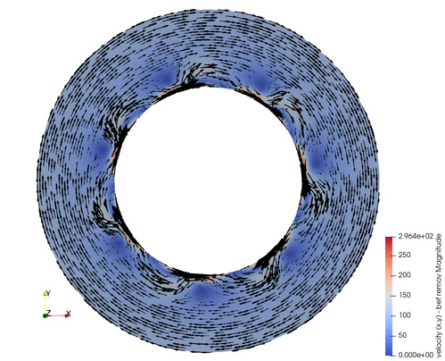
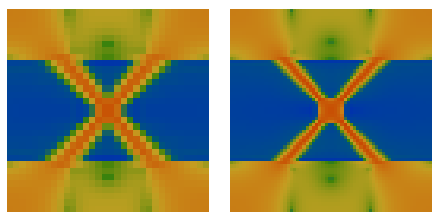
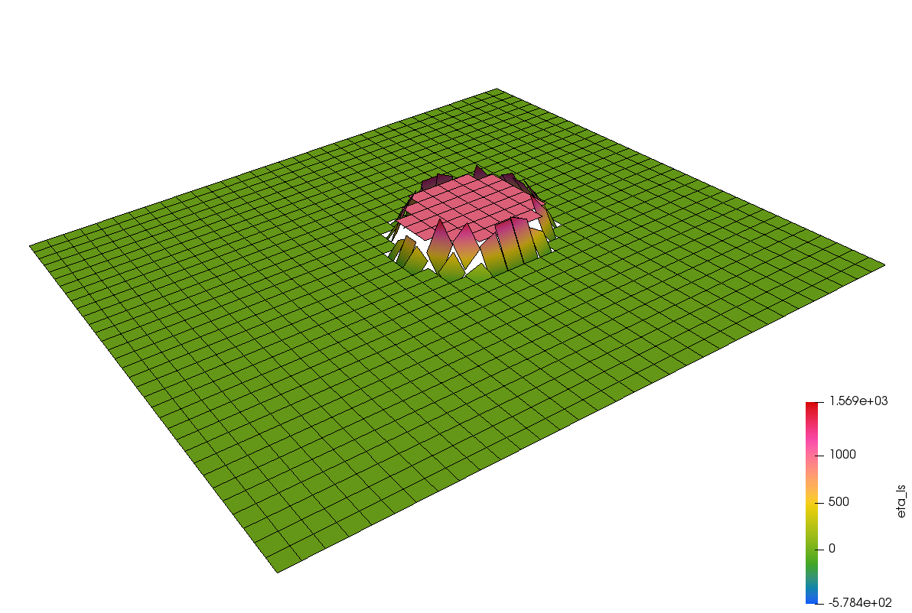
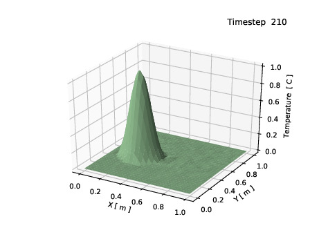
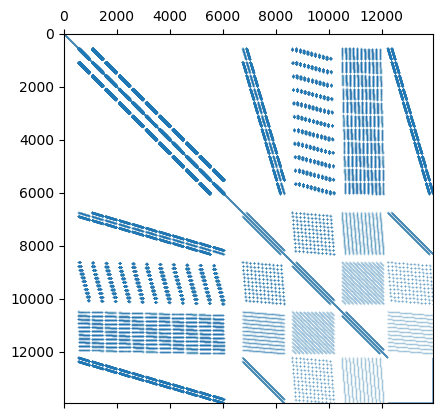
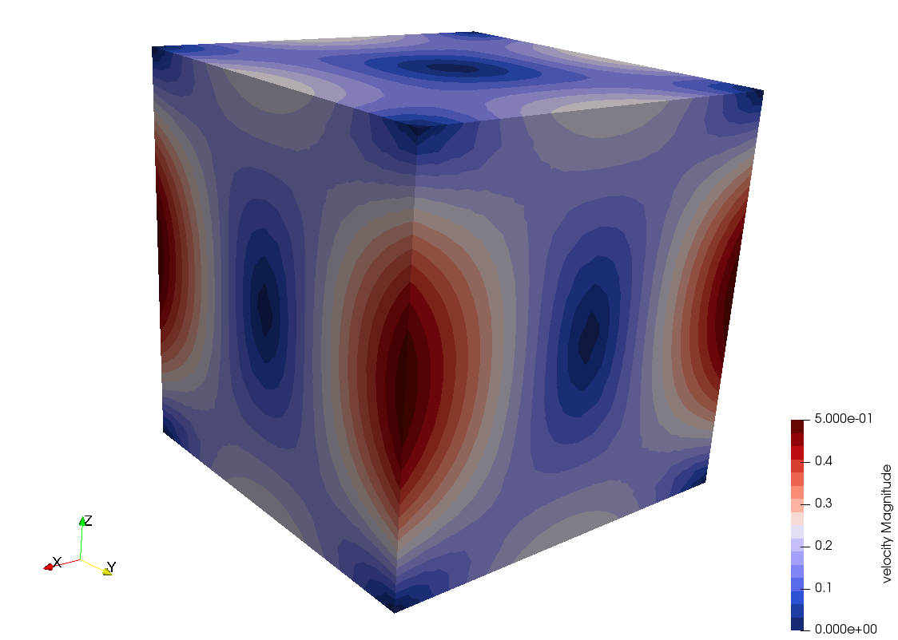
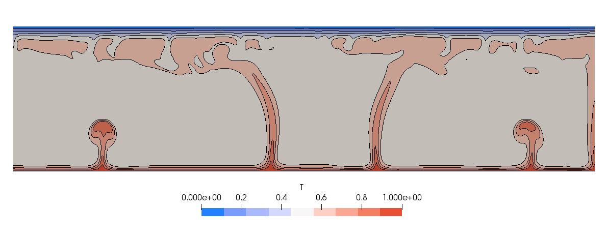
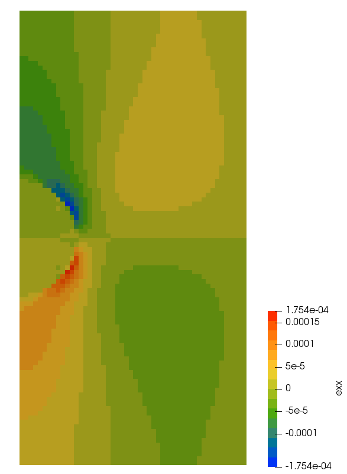

Cedric Thieulot
Vening Meineszgebouw A
Princetonlaan 8a
Room 254
3584 CB Utrecht
c.thieulot---(a)---uu.nl ORCID Google Scholar
FieldStone
This project was started with my students in mind, i.e. BSc, MSc and PhD
Geology/Geophysics students at Utrecht University.
With regards to the mathematics involved, I have chosen to use as little jargon as possible unless it is a term that is
commonly found in the geodynamics literature (methods paper as well as
application papers). There is no mathematical proof of any theorem that may
be mentioned but I will try to refer to the appropriate sources (i.e.
Numerical Analysis, Finite Element and Linear Algebra textbooks) when possible. If you find that this books lacks references
to Sobolev spaces, Lipschitz domains and the like, this book is just not for you.
The 100+ codes I share on github are by no means optimised as I have chosen code readability
over code efficiency. I have also often chosen to avoid resorting to multiple code
files or even functions in order to favour a sequential reading of the codes.
These codes are not designed to form the basis of a high-resolution high-performance geodynamics code.
Existing open source highly optimised codes shoud be preferred, such as for example
ASPECT,
CitcomS ,
LaMEM ,
ptatin3d ,
PyLith,
Underworld, ...
All kinds of feedback is welcome on the text (grammar, typos, ...), the equations
or on the code(s). You will have my eternal gratitude if you wish to contribute an
example, a benchmark, a cookbook, or even ask questions.
All the python scripts and latex files are available on
github
Disclaimer: unavoidably with such a wide ranging project like this
there are quite a few things in this huge document I probably do not understand
as well as I would want to, or that I am simply wrong about.
I sometimes write open questions in the text about such things.
My commitment is to revisit this document time and time again.
This is not a book, it has not been edited by anybody. It is not perfect in any way.
I nevertheless hope it will be useful to many in the long run.








If you are new to (computational) geodynamics, please read van Zelst, I., Crameri, F., Pusok, A. E., Glerum, A., Dannberg, J., and Thieulot, C.: 101 Geodynamic modelling: How to design, carry out, and interpret numerical studies, Solid Earth, there
My publications
Published: 38
Submitted: 4
1480 citations (899 since 2019)
h-index: 22 (17 since 2019)
i10-index: 30 (25 since 2019)
Just because it is fun:
Solid Earth: 10
G3: 6
JGR (solid earth): 3
GRL: 3
EPSL: 1
GJI: 2
PEPI: 2
JGR (planets): 1
**** In preparation ********************************************
On the choice of finite element for applications in
geodynamics. Part II: A comparison of simplex and hypercube elements,
C. Thieulot and W. Bangerth.
Magnetic Terrain Effect and Paleomagnetism: New Evidence from Forward Modelling
Mount Etna Unravels Large Local Magnetic Field Anomalies,
A.E. Hendrickx, C. Thieulot, L.V. de Groot.
Quantifying grain contact and grain volume stress fields in simulated sandstone:
a high-resolution FEM approach,
T. Shinohara, C. Thieulot, C.J. Spiers and Suzanne J.T. Hangx.
Effects of slab dragging on slab morphology and stress of the strongly arcuate
eastern Caribbean subduction system,
M. Fraters, W. Spakman, C. Thieulot and D. van Hinsbergen.
Plume-driven lithosphere delamination at continental breakup in the NE Atlantic region,
A. Lavecchia, W. Spakman, C. Gaina, C. Thieulot ,
Submitted to Nature Communications.
Quantifying mantle mixing through configurational entropy
,
E. van der Wiel, C. Thieulot and D. van Hinsbergen.,
submitted to Solid Earth,
link
The global gravity field of Mars reveals an active interior,
Bart Root, Weilun Qin, C. Thieulot, Youandi van der Tang,
Submitted to JGR Planets .
Benchmarking the accuracy of higher order particle methods in geodynamic models of transient flow,
R. Gassmoeller, J. Dannberg, W. Bangerth, G. Puckett and C. Thieulot ,
Submitted to Geoscientific Model Development (GMD).
link
Brittle-ductile rheological behavior in subduction zones: effects of strength ratio
between the plastic yield stress and the weak phase strength in a bi-phase system,
A. Maitre, F. Gueydan, C. Thieulot and E. Oliot,
Submitted to GRL.
[38]
Linking rates of slab sinking to long-term lower mantle flow and mixing ,
E. van der Wiel, D.J.J. van Hinsbergen, C. Thieulot and W. Spakman, EPSL 625, p118471, 2023, link.
@article{vavt24,
title={Linking rates of slab sinking to long-term lower mantle flow and mixing},
author={E. van der Wiel, D.J.J. van Hinsbergen, C. Thieulot and W. Spakman},
journal={EPSL},
volume={625},
pages={118471},
doi={10.1016/j.epsl.2023.118471},
year={2024}}
[37]
MaQuIs - Concept for a Mars Quantum Gravity Mission ,
L. Wörner, B. Root, Ph. Bouyer, C. Braxmaier, D. Dirkx, J. Encarnarcao, E. Hauber, H. Hussmann,
O. Karatekin, A. Koch, L. Kumanchik, F. Migliaccio, M. Reguzzoni, B. Ritter, M. Schilling,
C. Schubert, C. Thieulot , W. von Klitzing, O. Witasse Planetary and Space Science 239, 105800, 2023.
link
@article{worb23,
title={MaQuIs—Concept for a Mars Quantum Gravity Mission},
author={W{\"o}rner, L and Root, BC and Bouyer, P and Braxmaier, C and Dirkx, D and Encarna{\c{c}}{\~a}o, J and Hauber, E and Hussmann, H and Karatekin, {\"O} and Koch, A and others},
journal={Planetary and Space Science},
pages={105800},
doi={10.1016/j.pss.2023.105800},
year={2023}}
[36]
Modelling deep rooted thrusted mechanism of crustal thickening for Eastern Tibet,
P. Pitard, A. Replumaz, C. Thieulot , and M.-P. Doin, Geophysical Research Letters 50, 10.1029/2023GL104134, 2023.
link
@article{pirt23,
title={Modeling Deep Rooted Thrust Mechanism of Crustal
Thickening in Eastern Tibet},
author={P. Pitard and A. Replumaz and C. Thieulot and M.-P. Doin},
journal={Geophysical Research Letters},
volume={50},
pages={e2023GL104134},
doi={10.1029/2023GL104134},
year={2023}}
[35]
The effect of temperature-dependent material properties on simple thermal models of subduction zones,
I. van Zelst, C. Thieulot and T.J. Craig, Solid Earth 14, 683–707,
10.5194/se-14-683-2023, 2023.
link
@article{vatc23,
title={The effect of temperature-dependent material properties on simple
thermal models of subduction zones},
author={I. van Zelst and C. Thieulot and T.J. Craig},
journal={Solid Earth},
volume={14},
pages={683--707},
doi={10.5194/se-14-683-2023},
year={2023}}
[34]
Rifting Venus: Insights from Numerical Modeling ,
A. Regorda, C. Thieulot, I. van Zelst, Z. Erdös and S. Buiter, JGR: Planets 128, 10.1029/2022JE007588, 2023.
link
@article{retv23,
title={Rifting Venus: Insights from Numerical Modeling},
author={A. Regorda and C. Thieulot and I. van Zelst and Z. Erd{\H{o}}s and
J. Maia and S. Buiter},
pages={e2022JE007588},
doi={10.1029/2022JE007588},
volume={128},
year={2023}}
[33]
Benchmark forward gravity schemes: the gravity field of a realistic lithosphere model WINTERC-G,
B.C. Root, J. Sebera, W. Szwillus, C. Thieulot, Z. Martinec and J. Fullea, Solid Earth, 10.5194/se-13-849-2022, 2022.
link
@article{ross22,
title={Benchmark forward gravity schemes: the gravity field of a realistic
lithosphere model WINTERC-G},
author={B. Root and J. Sebera and W. Szwillus and C. Thieulot and Z. Martinec and J. Fullea},
journal={Solid Earth},
volume={13},
pages={849--873},
doi={10.5194/se-13-849-2022},
year={2022}}
[32]
101 Geodynamic modelling: How to design, carry out, and interpret numerical studies ,
I. van Zelst, F. Crameri, A.E. Pusok, A. Glerum, J. Dannberg,
and C. Thieulot, Solid Earth,
10.5194/se-13-583-2022, 2022.
link
@article{vacp22,
author={I. van Zelst and F. Crameri and A.E. Pusok and A.Glerum and
J. Dannberg and C. Thieulot},
title={101 Geodynamic modelling: How to design, interpret, and communicate numerical studies of
the solid Earth} ,
volume={13},
pages={583--637},
doi={10.5194/se-13-583-2022},
year={2022}}
[31]
On the choice of finite element for applications in geodynamics,
C. Thieulot and W. Bangerth, Solid Earth 13, p. 229-249, 2022. link
@article{thba22,
author={C. Thieulot and W. Bangerth},
title={On the choice of finite element for applications in geodynamics},
journal={Solid Earth},
doi={10.5194/se-13-1-2022},
volume={13},
pages={229--249},
year={2022}}
[30]
Exhumation History Along the Muli Thrust-Implication for Crustal Thickening Mechanism in Eastern Tibet,
P. Pitard, A. Replumaz, M-L Chevalier, P-H Leloup, M. Bai, M-P Doin, C. Thieulot, X. Ou, M. Balvay, H. Li, Geophysical Research Letters 48(14), p. e2021GL093677, 2021. link
@article{pirc21,
title={Exhumation History Along the Muli Thrust - Implication for
Crustal Thickening Mechanism in Eastern Tibet},
author={P. Pitard and A. Replumaz and M.-L. Chevalier and
C. Thieulot and X. Ou and M. Balvay and H. Li},
journal={Geophysical Research Letters},
volume={48},
pages={e2021GL093677},
doi={10.1029/2021GL093677},
year={2021}}
[29]
Towards the application of Stokes flow equations to structural restoration simulations,
M. Schuh-Senlis, C. Thieulot, P. Cupillard and G. Caumon, Solid Earth 11, p1909-1930, link, 2020.
@article{sctc20,
title={Towards the application of Stokes flow equations to structural restoration simulations},
author={Schuh-Senlis, M. and Thieulot, C. and Cupillard, P. and Caumon, G.},
journal={Solid Earth},
pages={1909--1930},
volume={11},
doi={10.5194/se-11-1909-2020},
year={2020}}
[28]
3D numerical modeling of crustal polydiapirs with Volume-Of-Fluid methods,
A. Louis-Napoleon, M. Gerbault, T. Bonometti,
C. Thieulot, R. Martin and O. Vanderhaeghe, Geophysical Journal International 222, p474-506, 2020, link.
@article{logb20,
title={3D numerical modeling of crustal polydiapirs with Volume-Of-Fluid methods},
author={Louis--Napol{\'e}on, A. and Gerbault, M. and Bonometti, Th. and
Thieulot, C. and Martin, R. and Vanderhaeghe, O.},
journal={Geophysical Journal International},
volume={222},
pages={474--506},
doi={10.1093/gji/ggaa141},
year={2020}}
[27]
The Geodynamic World Builder: a solution for complex initial conditions in numerical modelling ,
M. Fraters and C. Thieulot and A. van den Berg and W. Spakman, Solid Earth 10, 1785-1807, 2019, link.
@Article{frtv19,
AUTHOR = {Fraters, M. and Thieulot, C. and van den Berg, A. and Spakman, W.},
TITLE = {The Geodynamic World Builder: a solution for complex initial conditions in numerical modelling},
JOURNAL = {Solid Earth},
YEAR = {2019},
PAGES = {1785--1807},
volume = {10},
doi={10.5194/se-10-1785-2019}}
[26]
Efficient and Practical Newton Solvers for Nonlinear Stokes Systems in Geodynamic Problems,
M.R.T. Fraters, W. Bangerth, C. Thieulot , A.C. Glerum and W. Spakman, Geophysical Journal International, 2019, link
@article{frbt19,
title={{Efficient and Practical Newton Solvers for Nonlinear Stokes Systems in Geodynamic Problems}},
author={M.R.T. Fraters and W. Bangerth and C. Thieulot and A.C. Glerum and W. Spakman },
journal=gji,
volume={218},
pages={873--894},
doi={10.1093/gji/ggz183},
year={2019}}
[25] The effect of obliquity on temperature in subduction zones: insights from 3-D numerical modeling,
A. Plunder, C. Thieulot and D.J.J. van Hinsbergen, Solid Earth 9, 759-776, 2018, link
@article{pltv18,
title={{The effect of obliquity on temperature in subduction zones: insights from 3D numerical modeling}},
author={A. Plunder and C. Thieulot and D.J.J. van Hinsbergen},
journal={Solid Earth},
volume={9},
doi={10.5194/se-2017-134},
pages={759--776},
year={2018}}
[24] GHOST: Geoscientific Hollow Sphere Tessellation,
C. Thieulot, Solid Earth 9, 1169-1177, 2018, link
[23] Analytical solution for viscous incompressible Stokes flow in a spherical shell,
C. Thieulot, Solid Earth 8, 1181-1191, 2017, link
@Article{thie17,
AUTHOR = {C. Thieulot},
TITLE = {Analytical solution for viscous incompressible Stokes flow in a spherical shell},
JOURNAL = {Solid Earth},
VOLUME = {2017},
YEAR = {2017},
PAGES = {1--19},
doi={10.5194/se-2017-71}}
[22] Implementing nonlinear viscoplasticity in ASPECT: benchmarking and applications to 3D subduction modeling,
A. Glerum, C. Thieulot, M.Fraters, C. Blom, and Wim Spakman, Solid Earth 10.5194/se-9-267-2018, 2018.
link
@article{gltf18,
TITLE = {Nonlinear viscoplasticity in \textsc{ASPECT}: benchmarking and applications to subduction},
author={A. Glerum and C. Thieulot and M. Fraters and C. Blom and W. Spakman},
journal={Solid Earth},
volume={9},
NUMBER = {2},
pages={267--294},
doi={10.5194/se-9-267-2018},
year={2018}}
[21] Lithosphere erosion and continental breakup: interaction of extension, plume upwelling and melting,
A. Lavecchia, C. Thieulot, F. Beekman, S. Cloetingh and S. Clark, E.P.S.L. 467, p89-98, 10.1016/j.epsl.2017.03.028, 2017.
link
@article{latb17,
title={Lithosphere erosion and continental breakup: Interaction of extension, plume upwelling and melting},
author={A. Lavecchia and C. Thieulot and F. Beekman and S. Cloetingh and S. Clark},
journal=epsl,
volume={467},
pages={89--98},
doi={10.1016/j.epsl.2017.03.028},
year={2017}}
[20]
Benchmarking Numerical Models of Brittle Thrust Wedges ,
Buiter, S. JH and Schreurs, G. and Albertz, M. and Gerya, T. and Kaus, B.
and Landry, W. and Le Pourhiet, L. and Mishin, Y. and Egholm, D. and Cooke, M.
and B. Maillot and C. Thieulot and T. Crook and D. May
and P. Souloumiac and Ch. Beaumont, Journal of Structural Geology 92, p140-177, 2016,
link
@article{busa16,
title={Benchmarking numerical models of brittle thrust wedges},
author={S.J.H. Buiter and G. Schreurs and M. Albertz and T.V. Gerya and B. Kaus and W. Landry
and L. {Le Pourhiet} and Y. Mishin and D.L. Egholm and M. Cooke and B. Maillot and C. Thieulot
and T. Crook and D. May and P. Souloumiac and C. Beaumont},
journal={Journal of Structural Geology},
volume={92},
pages={140--177},
doi={10.1016/j.jsg.2016.03.003},
year={2016}}
[19] A community benchmark for viscoplastic thermal convection in a 2-D square box ,
N. Tosi, C. Stein, L. Noack, C. Huettig, P. Maierova, H. Samuel, D.R. Davies, C.R. Wilson,
S.C. Kramer, C. Thieulot,
A. Glerum, M. Fraters, W. Spakman, A. Rozel, P.J. Tackley, Geochem. Geophys. Geosyst. 16, doi:10.1002/2015GC005807, 2015.
@article{tosn15,
title={{A community benchmark for viscoplastic thermal convection in a 2-D square box}},
author={N. Tosi and C. Stein and L. Noack and C. Huettig and P. Maierova and H. Samuel
and D.R. Davies and C.R. Wilson and S.C. Kramer and C. Thieulot and A. Glerum
and M. Fraters and W. Spakman and A. Rozel and P.J. Tackley},
journal={Geochemistry, Geophysics, Geosystems},
volume={16},
number={7},
doi={10.1002/2015GC005807},
pages={2175-2196},
year={2015}}
[18]
Dynamics of intra-oceanic subduction initiation, part 2: supra-subduction zone ophiolite
formation and metamorphic sole exhumation in context of absolute plate motions,
D.J.J. van Hinsbergen, K. Peters, M. Maffione, W. Spakman, C. Guilmette, C. Thieulot,
O. Pluemper,
D. Guerer, F.M. Brouwer, E. Aldanmaz, N. Kaymakci, Geochem. Geophys. Geosyst. 16, p1771-1785, 2015, link
@article{vapm15,
title={Dynamics of intraoceanic subduction initiation: 2. Suprasubduction zone ophiolite
formation and metamorphic sole exhumation in context of absolute plate motions},
author={van Hinsbergen, Douwe JJ and Peters, Kalijn and Maffione, Marco and Spakman, Wim
and Guilmette, Carl and Thieulot, Cedric and Pl{\"u}mper, Oliver and G{\"u}rer, Derya
and Brouwer, Fraukje M and Aldanmaz, Ercan and others},
journal={Geochemistry, Geophysics, Geosystems},
volume={16},
number={6},
pages={1771--1785},
doi={10.1002/2015GC005745},
year={2015}}
[17]
Dynamics of intraoceanic subduction initiation: 1. Oceanic detachment fault inversion
and the formation of supra-subduction zone ophiolites,
M. Maffione, C. Thieulot, D.J.J. van Hinsbergen, A. Morris, O. Pluemper and W. Spakman, Geochem. Geophys. Geosyst. 16,
p1753-1770, 2015.
@article{matv15,
title={{Dynamics of intraoceanic subduction initiation: 1. Oceanic detachment fault
inversion and the formation of supra-subduction zone ophiolites}},
author={M. Maffione and C. Thieulot and D.J.J. van Hinsbergen and A. Morris
and O. Pl{\"u}mper and W. Spakman},
journal={Geochemistry, Geophysics, Geosystems},
volume={16},
pages={1753--1770},
doi={10.1002/2015GC005746},
year={2015}}
[16]
Three-dimensional numerical simulations of crustal systems undergoing orogeny and
subjected to surface processes,
C. Thieulot, P. Steer and R.S. Huismans, Geochem. Geophys. Geosyst, doi:10.1002/2014GC005490, 2015.
@article{thsh14,
title={{Three-dimensional numerical simulations of crustal systems undergoing orogeny and
subjected to surface processes}},
author={C. Thieulot and P. Steer and R.S. Huismans},
journal={Geochemistry, Geophysics, Geosystems},
volume={15},
doi={10.1002/2014GC005490},
year={2014}}
[15] Extensional inheritance and surface processes as controlling factors of mountain belt structure,
Z. Erdos, R.S. Huismans, Peter van der Beek and C. Thieulot, Journal of Geophysical Research, 119, doi:10.1002/2014JB011408.
@article{erhv14,
title={{Extensional inheritance and surface processes as controlling factors of mountain belt structure}},
author={Z. Erdos and R.S. huismans and P. van der Beek and C. Thieulot},
journal={Journal of Geophysical Research},
volume={119},
doi={10.1002/2014JB011408},
year={2014}}
[14] Using the level set method in geodynamical modelling of multi-material flows and Earth's free surface,
B. Hillebrand, C. Thieulot, T. Geenen, A. van den Berg and W. Spakman, Solid Earth, 2014.
@Article{hitg14,
author = {Hillebrand, B. and Thieulot, C. and Geenen, T. and van den Berg, A. P. and Spakman, W.},
title = {Using the level set method in geodynamical modeling of multi-material flows
and Earth's free surface},
journal = {Solid Earth},
volume = {5},
year = {2014},
number = {2},
pages = {1087--1098},
doi={10.5194/se-5-1087-2014}}
[13] 3D numerical modelling of graben interaction and linkage: case study of Canyonlands,
V. Allken, R.S. Huismans, H. Fossen and C. Thieulot, Basin Research (2012) 25, 1-12, doi: 10.1111/bre.12010
@article{alhf13,
title={3D numerical modelling of graben interaction and linkage: a case
study of the Canyonlands grabens, Utah},
author={V. Allken and R.S. Huismans and H. Fossen and C. Thieulot},
journal={Basin Research},
volume={25},
pages={1--14},
doi={10.1111/bre.12010},
year={2013}}
[12] Factors controlling the mode of rift interaction in brittle-ductile coupled systems: a 3D numerical study,
V. Allken, R.S. Huismans, C. Thieulot, Geochem. Geophys. Geosyst., Volume 13, Number 5, Q05010, doi:10.1029/2012GC004077, 2012
@article{alht12,
title={Factors controlling the mode of rift interaction in brittle-ductile
coupled systems: a 3D numerical study},
author={V. Allken and R. Huismans and C. Thieulot},
journal={Geochemistry, Geophysics, Geosystems},
volume={13},
number={5},
pages={Q05010},
doi={10.1029/2012GC004077},
year={2012}}
[11] Three dimensional numerical modelling of crustal extension ,
V. Allken, R. Huismans and C. Thieulot, Journal of Geophysical Research, doi:10.1029/2011JB008319, 2011.
@article{alht11,
Author = {V. Allken and R. Huismans and C. Thieulot},
journal={Journal of Geophysical Research},
Title = {Three dimensional numerical modelling of upper crustal extensional systems},
Pages = {B10409},
Volume = {116},
doi={10.1029/2011JB008319},
Year = {2011}}
[10] FANTOM : two- and three-dimensional numerical modelling of creeping flows for the solution of geological problems ,
C. Thieulot, Physics of the Earth and Planetary Interiors, doi:10.1016/j.pepi.2011.06.011, 2011.
@article{thie11,
title={{FANTOM: two- and three-dimensional numerical modelling of creeping flows for the solution
of geological problems}},
author={C. Thieulot},
journal={Physics of the Earth and Planetary Interiors},
volume={188},
number={1},
pages={47--68},
doi={10.1016/j.pepi.2011.06.011},
year={2011}}
[9] Subducting slabs: jellyfishes in the Earth's mantle,
Loiselet, C., J. Braun, L. Husson, C. Le Carlier de Veslud, C. Thieulot, P. Yamato, and D. Grujic, Geochem. Geophys. Geosyst., 11, Q08016, doi:10.1029/2010GC003172, 2010.
@article{lobh10,
title={{Subducting slabs: Jellyfishes in the Earth's mantle}},
author={C. Loiselet and J. Braun and L. Husson and C. {Le Carlier de Veslud} and
C. Thieulot and P. Yamato and D. Grujic},
journal={Geochemistry, Geophysics, Geosystems},
volume={11},
number={8},
doi={10.1029/2010GC003172},
year={2010}}
[8] Influence of surrounding plates on 3D subduction dynamics,
P. Yamato, L. Husson, J. Braun, C. Loiselet, and C. Thieulot, Geophysical Research Letters 36, L07303, doi:10.1029/2008GL036942, 2009.
@article{yahb09,
Author = {P. Yamato and L. Husson and J. Braun and C. Loiselet and C. Thieulot},
journal = {Geophysical Research Letters},
Number = {L07303},
doi={10.1029/2008GL036942},
Title = {Influence of surrounding plates on {3D} subduction dynamics},
Volume = {36},
Year = {2009}}
[7] Adaptive octree-based finite element analysis of two- and three-dimensional indentation problems,
C. Thieulot, P. Fullsack and J. Braun, Journal of Geophysical Research 113, B12207, doi:10.1029/2008JB005591, 2008.
@article{thfb08,
Author = {C. Thieulot and P. Fullsack and J. Braun},
journal={Journal of Geophysical Research},
Pages = {B12207},
Title = {Adaptive octree-based finite element analysis of two- and three-dimensional indentation problems},
Volume = {113},
doi={10.1029/2008JB005591},
Year = {2008}}
[6] DOUAR: a new three-dimensional creeping flow model for the solution of geological problems,
J. Braun, C. Thieulot, P. Fullsack, M. DeKool, C. Beaumont and R. Huismans, Physics of the Earth and Planetary Interiors 171, p76-91, 2008.
@article{brtf08,
Author = {J. Braun and C. Thieulot and P. Fullsack and M. DeKool and R.S. Huismans},
journal = {Physics of the Earth and Planetary Interiors},
Pages = {76-91},
Title = {{DOUAR}: a new three-dimensional creeping flow model for the solution of geological problems},
Volume = {171},
doi={10.1016/j.pepi.2008.05.003},
Year = {2008}}
[5] Non-isothermal diffusion in a binary mixture with smoothed particle hydrodynamics,
C. Thieulot, P. Español, Computer Physics Communications 169, 172 (2005).
@article{thes05,
title={Non-isothermal diffusion in a binary mixture with smoothed particle hydrodynamics},
author={Thieulot, Cedric and Espa{\~n}ol, Pep},
journal={Computer physics communications},
volume={169},
number={1-3},
pages={172--176},
doi={10.1016/j.cpc.2005.03.039},
year={2005}}
[4] Smoothed Particle Hydrodynamics model for phase separating fluid mixtures. I General equations ,
C. Thieulot, P. Español and L.P.B.M.Janssen, Phys. Rev. E 72, 016713 (2005).
@article{thje05a,
title={Smoothed particle hydrodynamics model for phase separating fluid mixtures.
I. General equations},
author={Thieulot, Cedric and Janssen, LPBM and Espa{\~n}ol, Pep},
journal={Physical Review E},
volume={72},
number={1},
pages={016713},
doi={10.1103/PhysRevE.72.016713},
year={2005}}
[3] Smoothed Particle Hydrodynamics model for phase separating fluid mixtures. II Diffusion in a binary mixture,
C. Thieulot, P. Español and L.P.B.M.Janssen, Phys. Rev. E 72, 016714 (2005).
@article{thje05b,
title={Smoothed particle hydrodynamics model for phase separating fluid mixtures.
II. Diffusion in a binary mixture},
author={Thieulot, Cedric and Janssen, LPBM and Espa{\~n}ol, Pep},
journal={Physical Review E},
volume={72},
number={1},
pages={016714},
doi={10.1103/PhysRevE.72.016714},
year={2005}}
[2] Microscopic derivation of hydrodynamic equations for phase separating fluid mixtures,
P. Español and C. Thieulot, J. Chem. Phys., 118, 9109 (2003).
@article{esth03,
title={Microscopic derivation of hydrodynamic equations for phase-separating fluid mixtures},
author={Espanol, Pep and Thieulot, Cedric},
journal={The Journal of chemical physics},
volume={118},
number={20},
pages={9109--9127},
doi={10.1063/1.1568333},
year={2003}}
[1] Simplified models of flue instruments: Influence of mouth geometry on the sound source,
S. Dequand, J. F. H. Willems, M. Leroux, R. Vullings, M. van Weert, C. Thieulot, and A. Hirschberg,
J. Acoust. Soc. Am. 113, 1724 (2003),
link
.
@article{dewl03,
title={Simplified models of flue instruments: Influence of mouth geometry on the sound source},
author={Dequand, S and Willems, JFH and Leroux, M and Vullings, R and van Weert, M
and Thieulot, C and Hirschberg, Abraham},
journal={The Journal of the Acoustical Society of America},
volume={113},
number={3},
pages={1724--1735},
doi={10.1121/1.1543929},
year={2003}}
**** In limbo *************************************************
In 2014 I submitted the following article for publication in Solid Earth.
It never happened. The reviews are available
here.
The main criticisms of the reviewers were a) I had made a mistake measuring the
discretisation errors so that the obtained convergence rates were too high;
b) the code was advertised as user-friendly but was not open-source;
c) it was too similar to my FANTOM paper and code.
I worked for months on addressing the points of criticism but in the end gave up.
In the end the code evolved passed what was showcased in the submitted paper
and was used in a few papers between 2015 and 2018.
The original submitted pdf is still online. It has been cited 30 times and
downloaded more than a thousand times.
[X] ELEFANT: a user-friendly multipurpose geodynamics code,
C. Thieulot,
Solid Earth Discussions. (2014),
link
.
Academic background
June 2015 - ...: Assistant Professor at the University of Utrecht, Department of Earth Sciences, The Netherlands.
Jan 2012 - June 2015 : Post-doctoral researcher at the University of Utrecht, Department of Earth Sciences, The Netherlands.
March. 2011 - Dec 2011: Post-doctoral researcher at the Bergen University, Department of Earth Sciences, Norway.
Jan. 2008 - Jan. 2011 : Post-doctoral researcher at the Bergen University, Department of Earth Sciences, Norway.
Sept. 2004 - Sept. 2005: Assistant researcher at the Groupe Matiere Condensée et Matériaux,
Université Rennes1 (France).
2004: Thermodynamically consistent fluid particle modelling of phase separating mixtures. Ph.D. Thesis financed by ICOPAC within the European Commission's 5th Framework Improving Human Potential programme. University of Groningen (The Netherlands), University of Madrid (Spain).
2000: DEA ATIAM (M.Sc.) : Applying acoustics, signal processing and computer science to music. IRCAM, Paris (France)
Subjects : mathematics, signal processing, computer science, room acoustics, music instruments acoustics, psychoacoustics, lectures on music research.
1999: Magistère (B.Sc.) in fundamental physics, obtained with honours.University Paris XI, Orsay (France).
Subjects of the first year : mathematics, quantum mechanics, classical mechanics, electromagnetism, statistical physics, computer science, electronics, astrophysics, practicals, and lectures on general science.
Subjects of the second year : atoms and molecules, optics and lasers, fluid mechanics, plasmas, experimental physics, nuclei and particles, condensed matter physics, astrophysics, statistical physics.
1997: D.E.U.G. MIAS (Mathematiques et Informatique Appliquees aux Sciences) obtained with honours. University Paris XI, Orsay (France).
Subjects of the first and second years: mathematics, computer science, classical mechanics, optics, electromagnetism, acoustics, chemistry.
1995: French Baccalaureat, major in physics and mathematics, obtained with honours. Etampes (France).